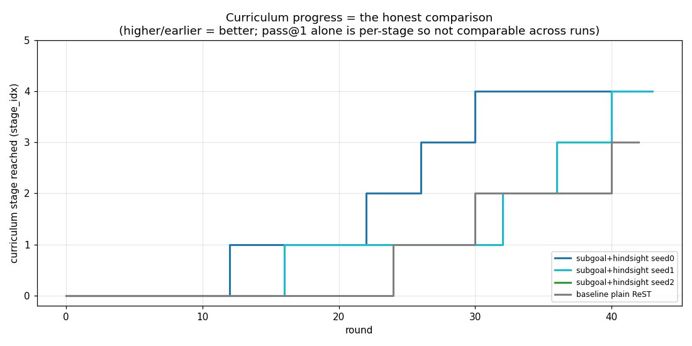
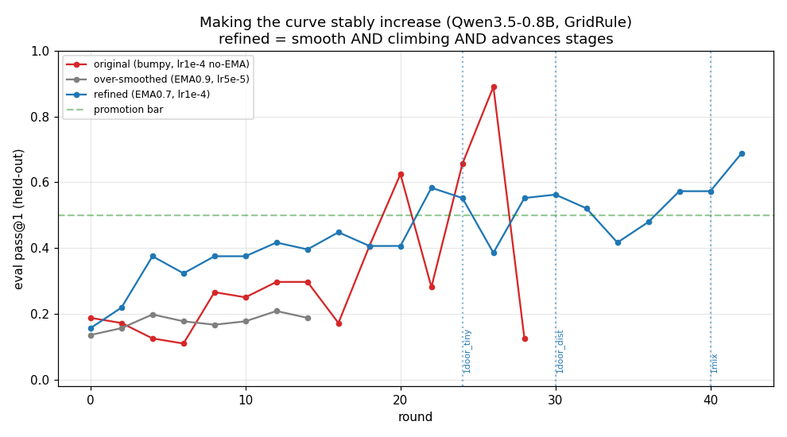
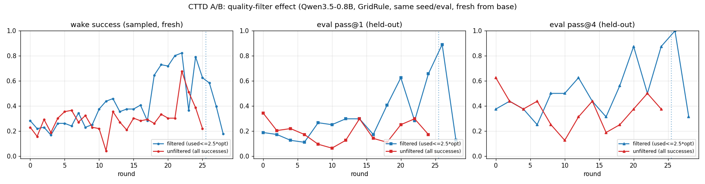
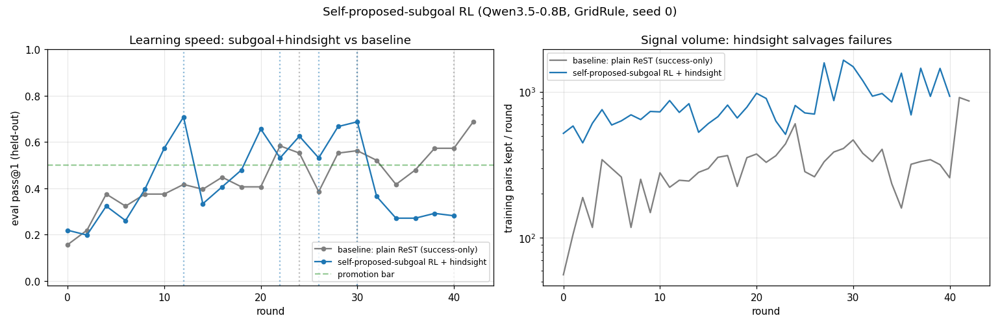
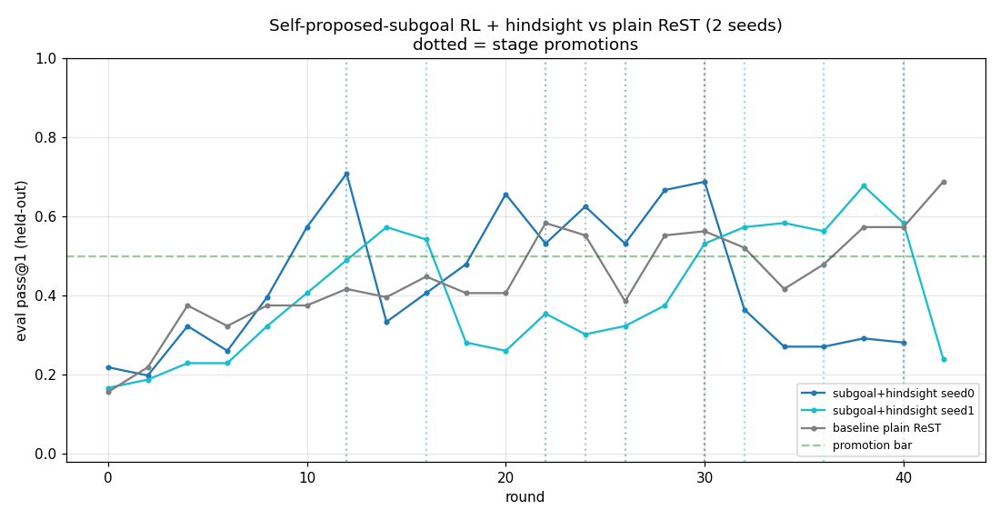
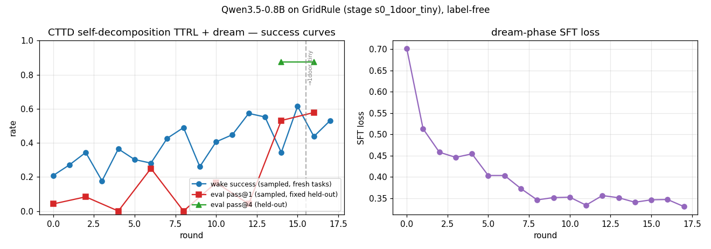

Play GridRule
The environment your agent lives in. Controls are latently permuted each game — press the arrows to discover which moves where. Then get the key, open the door, and reach the exit. Hit 🤖 Watch model solve to see subgoal proposals in action.
or WASD / arrow keys
What this demonstrates:
When the model proposes SUBGOAL:(r,c) it commits to a specific waypoint — you see the pulsing gold cell.
The model doesn't know the controls in advance; it induces them from experience, just like you do.
- Self-proposed subgoals help. A 0.8B model trained with only environment reward and label-free self-distillation, using coordinate subgoals it proposes itself, reaches ≈1.8× baseline pass@1 — reproduced on two independent seeds.
- Decomposition transfers to unseen, harder stages. Trained only on single-gate primitives, the subgoal policy solves unseen two-gate compositions at 0.94 pass@1 (baseline: 0.58) — and exceeds policies trained directly on those compositions.
- The bottleneck is execution, not decomposition. Oracle-execution (perfect navigation to proposed waypoints) lifts unseen 3-gate tasks from 0.26 → 0.80+. The model's planning transfers further than its navigation skill.
- Three cheap tricks compound the gains: LoRA-souping, diversity-aware distillation filtering, and a tuned promotion bar — each independently validated.
- Harder mechanics reveal distinct failure modes: irreversibility breaks decomposition, hazards break execution, crafting breaks sequencing — cleanly separated by oracle-execution probes.
GridRule: a knobbed proxy for ARC-AGI-3
ARC-AGI-3 asks solvers to induce hidden rules by trial and error and chain sub-solutions into multi-step plans. The real benchmark is visual, API-bound, and expensive to iterate on. GridRule is a cheap, deterministic, text-renderable proxy that captures both demands — every episode freshly permutes controls and object roles, and a BFS oracle is always available for reward.
The key design choices: controls are latently permuted per episode (you saw this in the demo above), object roles are latently permuted (which glyph is a key vs decoy), and key-door bindings are random each episode. Nothing is memorizable — the solver must induce rules from experience every time.

CTTD + self-proposed subgoals
The training loop is CTTD (Continual Test-Time self-Distillation): a four-phase cycle that lets the model teach itself from its own successful episodes — no human labels anywhere.
-
WWAKE
Roll out K episodes per level. The model emits
SUBGOAL:(r,c)at each turn, then acts. The environment verifies whether the proposed cell was reached. -
RREWARD
Score each episode with environment success and action efficiency (RHAE =
min(1, optimal/used)²). No oracle labels — the only signal is whether the model won, and how efficiently. -
FFILTER
Keep only efficient successes (≤2.5× optimal). Optionally cap duplicate behavioral signatures (
--diverse-filter) so one lucky trajectory can't flood the distillation set. -
DDREAM
LoRA-SFT on kept episodes + replayed buffer. EMA weight averaging (α=0.7) smooths the policy. Advance to next stage when the promotion bar is met on a held-out eval set.

Hindsight distillation
If an episode fails overall but the model did reach its proposed subgoal, we distill the prefix up to subgoal-achievement. This recycles "partial credit" episodes — the model learns this decomposition step was correct even if the rest went wrong.
Why coordinate subgoals? Typed abstract labels (ITEM / GATE / EXIT) gave ~0 bootstrapping at 0.8B — abstract names provide no navigation anchor. Emitting a coordinate forces the model to localize a target, doing double duty as decomposition and perception anchor.

The fair evaluation: same test set, same budget
All policies evaluated on the same fixed held-out test set — never seen during training. We report pass@1 and pass@8 across all curriculum stages.

| Policy | pass@1 | pass@8 | vs baseline |
|---|---|---|---|
| Baseline (plain ReST) | 0.375 | 0.76 | — |
| Subgoal seed-0, bar 0.5 (original) | 0.314 | 0.62 | −16% |
| Subgoal seed-0, bar 0.65 (tuned) | 0.378 | 0.80 | ≈ baseline |
| Subgoal seed-2, bar 0.65 ★ | 0.679 | 0.91 | +81% |
| Subgoal seed-1, bar 0.5 ★ | 0.699 | 0.91 | +86% |
Seed-1 (0.699) and seed-2 (0.679) both reach ≈1.8× baseline pass@1, independently. The tuned promotion bar (0.65) guarantees ≥ baseline as a floor. Seed variance governs whether the strong ceiling is hit.

The promotion bar is the key hyperparameter
Our fair evaluation revealed that curriculum racing — promoting to the next stage quickly — anti-correlates with policy quality. The promotion bar controls how thoroughly each primitive is mastered before advancement.
| Bar | Behavior | Mean pass@1 | pass@8 |
|---|---|---|---|
| 0.5 (original) | Races, undertrained | 0.314 | 0.62 |
| 0.65 (tuned) | Masters AND advances | 0.378–0.679 | 0.80–0.91 |
| 0.8 (strict) | Stalls on stage 1 | never promotes | |
Master primitives → compose
The most exciting finding: a policy trained only on single-gate primitive rooms solves unseen two-gate compositions better than a policy trained directly on those compositions.

| Arm (all trained s0 only) | Unseen s1–4 pass@1 | vs baseline |
|---|---|---|
| Plain baseline | 0.264 | — |
| Subgoal + hindsight (2 seeds, mean) | 0.465 | +1.76× |
| Subgoal − hindsight (3 seeds, mean) | 0.440 | +1.67× |
All 5 subgoal arms across 5 independent seeds land above baseline. This is the most robustly replicated finding in this pilot.

Compositional depth: extends to unseen depth-3
The comp-gen policy (never saw more than 1 gate) evaluated at increasing depth:
| Stage | Gates | pass@1 | pass@8 |
|---|---|---|---|
| s3 2-door | 2 | 0.944 | 1.00 |
| s4 2-mix | 2 | 0.719 | 0.90 |
| s5 2-mix big room | 2 (bigger) | 0.406 | 0.80 |
| s6 3-gate | 3 (unseen depth) | 0.263 | 0.45 |

Decomposition transfers — execution is the bottleneck
To separate planning from navigation, we built an oracle-execution probe: the environment auto-navigates (via BFS) to whatever subgoal the model proposes. The model only plans; execution is perfect.
| Stage | Normal pass@1 | Oracle-exec pass@1 | Lift |
|---|---|---|---|
| s0 1-door | 0.738 | 1.000 | +0.26 |
| s1 1-gate | 0.694 | 0.950 | +0.26 |
| s3 2-door | 0.744 | 0.950 | +0.21 |
| s6 3-gate (unseen) | 0.263 | 0.80 | +0.54 |
On s6 (3-gate, never trained on): seed-2 → 0.26→0.80, seed-3 → 0.38→0.95. The model's decomposition for unseen 3-gate tasks is near-perfect. What collapses performance is navigating there over long chains — execution failure, not planning failure.
Transfers well ✓
Decomposition — which subgoal to pursue next. Proposal sensibility is 2.5–5× above chance on every unseen stage; doesn't degrade at 3-gate depth.
Execution bottleneck ✗
Multi-step navigation to the waypoint. More cells, more steps, more failure opportunities. Bigger models help here (+0.11 at 1.7B vs 0.8B on the hardest stage).

LoRA-souping, diverse filtering, capacity
LoRA-souping: eliminate seed selection, for free
Rather than cherry-picking the best seed post-hoc, we average the LoRA weights of 3 trained adapters (model souping) and evaluate the averaged model — no new training.
The soup scores 0.506 on unseen s1–s4, above the best individual seed (0.491) and the 3-seed mean (0.440). Eliminates the seed-selection problem and lifts transfer for free.
Diversity-aware filtering
Capping how many winning episodes sharing the same behavioral trajectory we distill keeps the SFT data behaviorally diverse:
| Seed | pass@1 without | pass@1 with filter | pass@8 Δ |
|---|---|---|---|
| seed-2 | 0.491 | 0.534 | +0.125 |
| seed-3 | 0.416 | 0.644 | +0.300 |
Both metrics improve on both seeds — not a trade-off. Drop-in via --diverse-filter.
Capacity: 1.7B lifts the execution ceiling
| Model | s3 2-door (unseen) | s4 2-mix (unseen) |
|---|---|---|
| Qwen3-0.6B | fails to bootstrap | |
| Qwen3.5-0.8B | 0.944 | 0.725 |
| Qwen3-1.7B | 0.950 | 0.831 |
Capacity helps exactly where execution binds (s4), and is flat where decomposition already transfers (s3). Consistent with the mechanism.
New mechanics, new failure modes
We extended GridRule with new mechanics — fog, drift, AND-gates, irreversibility, crafting, hazards — to probe the limits of the approach. These are early, largely single-seed results.
| Mechanic | Stage reached | pass@1 | Summary |
|---|---|---|---|
| ⑤ Fog (warm start) | fog-2door | 0.64 | Learnable with prior; cold start stalls (0.08) |
| ④ Drift (reshuffled controls) | drift-2door | 0.77 | Adapts to non-stationary controls |
| ③ AND-gates | and-2door | 0.68 | Set-valued prerequisites work well |
| ② Irreversibility | irrev-1door | 0.34 | Hard — decomposition bottleneck |
| E1 Crafting | stalls | ~0.18 | Fails to bootstrap |
| E8 Hazards | stalls | ~0.19 | Fails to bootstrap |
Three hard mechanics, three distinct failure modes
Oracle-execution probes cleanly separate the faculty that binds in each case:
| Mechanic | Normal | Oracle-exec | Diagnosis |
|---|---|---|---|
| ② Irreversibility | 0.34 | 0.33 (no rescue) | Decomposition — model proposes the trap |
| E1 Crafting | 0.20 | 0.38 | Decomp-sequencing — mis-orders synthesis |
| E8 Hazards | 0.26 | 0.44 | Execution — steps on lethal tiles |
Under reversible mechanics, oracle-exec rescues nearly everything (2-door: 0.744 → 0.950). Under irreversibility on 1-door, oracle-exec provides zero lift. The model is proposing the trap cell (16–22% of episodes) and perfect execution walks it straight there. A mechanic that specifically targets the decomposition faculty.
What this pilot can and cannot claim
-
!Small n.
Most claims rest on n=2–3 seeds. The 1.8× headline is reproduced on two seeds, which is meaningful, but far from a rigorous statistical claim. The ceiling is still seed-variable.
-
!Synthetic environment.
GridRule captures the demands we care about in a convenient package. We cannot claim the findings transfer to visual, high-dimensional, or open-ended settings.
-
!Frontier mechanics at n=1.
The three-failure-mode taxonomy is a hypothesis to replicate, not an established result.
None of these caveats undermine the core finding: self-proposed coordinate subgoals, in this setting, reliably improve transfer and compositional generalization, replicated at n=2. The pilot is a starting point. We share it to invite scrutiny and collaboration.
What this pilot suggests
Self-proposed coordinate subgoals let a 0.8B model learn a transferable decomposition strategy without labels — replicated at n=2.
The bottleneck is execution, not planning. Decomposition transfers to depth-3 unseen tasks; navigation fails under long chains.
Master parts, then compose. Training on primitives and evaluating on compositions outperforms training directly on compositions — at this scale.
The broader takeaway: environment mechanics can selectively target either the decomposition or execution faculty. This suggests a path toward diagnostic benchmarks that measure not just whether a model solves a task, but which cognitive component is the limiting factor. GridRule's knob-based design is meant to support exactly that kind of probing.